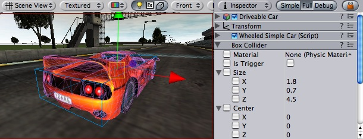
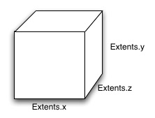

Previous
Previous
The Box Collider is a basic cube-shaped collision primitive.

Box collider here is used to approximate car's hull
Properties
| Property: | Function: |
|---|---|
| Reference to the PhysicMaterial that determines how this Collider interacts with others. | |
| If enabled, this Collider is used for triggering events, and is ignored by the physics engine. | |
| The size of the collider in the X, Y, Z directions. | |
| The position of the collider in the object's local space. |
Details
The Box Collider can be resized into different shapes of rectangular prisms. It works great for doors, walls, platforms, etc. It is also effective as a human torso in a ragdoll or car hull in a vehicle. Of course, it works perfectly for just boxes and crates as well!

A standard Box Collider
Colliders work with Rigidbodies to bring physics in Unity to life. Whereas Rigidbodies allow objects to be controlled by physics, Colliders allow objects to collide with each other. Colliders must be added to objects independently of Rigidbodies. A Collider does not necessarily need a Rigidbody attached, but a Rigidbody must be attached in order for the object to react to collisions.
When a collision between two Colliders occurs and if at least one of them has a Rigidbody attached, three collision messages are sent out to the objects attached to them. These events can be handled in scripting, and allow you to create unique behaviors with or without making use of the built-in Ageia physX engine.
Triggers
An alternative way of using Colliders is to mark them as a Trigger, just check the IsTrigger property checkbox in the Inspector. Triggers are effectively ignored by the physics engine, and have a unique set of three trigger messages that are sent out when a collision with a Trigger occurs. Triggers are useful for triggering other events in your game, like cutscenes, automatic door opening, displaying tutorial messages, etc. Use your imagination!
Be aware that in order for two Triggers to send out trigger events when they collide, one of them must be attached to a Rigidbody. For a Trigger to collide with a normal Collider, one of them must have a Rigidbody attached. For a detailed chart of different types of collisions, see the collision action matrix in the Advanced section below.
Friction and bouncyness
Friction, bouncyness and softness is defined in the physic material. The Standard Assets contain the most common physic materials. To use one of them click on the material popup and select eg. Ice. You can also create your own physic materials and tweak all friction values.
Compound Colliders
Compound Colliders are combinations of primitive Colliders, all together acting as a single Collider. They come in handy when you have a complex mesh to use in collisions, but cannot use a Mesh Collider. To create a Compound Collider, create child objects of your colliding object, then add a primitive Collider to each child object. This allows you to position, rotate, and scale each Collider easily and independently of each other.
A GameObject with a Rigidbody and multiple colliders attached
In the above picture, the terrain has a Mesh Collider attached. Mesh Colliders work the best for terrain or environments made from irregular shapes. The Rigidbody has 3 child Colliders attached: capsule, cube and sphere. When Play mode begins, the Rigidbody falls due to gravity, and the 3 child Colliders fall with it. The 3 Collision primitives collide with the Mesh Collider, and the Rigidbody eventually balances and comes to rest on the 3 Colliders.
Keep in mind, Mesh Colliders can't collide with each other, so the typical solution is to use primitive Colliders for any objects that move, and Mesh Colliders for static background objects.
Hints
- To add multiple Colliders for an object, create child objects and attach a Collider to each one. This allows each Collider to be manipulated independently.
- You can look at the gizmos in the Scene view to see how the Collider is being calculated on your object.
- Colliders do their best to match the scale of an object. If you have a non-uniform scale (a scale which is different in each direction), only the Mesh Collider can match completely.
Advanced
Collider combinations
There are numerous different combinations of collisions that can happen in Unity. Each game is unique, and different combinations may work better for different types of games. If you're using physics in your game, it will be very helpful to understand the different basic Collider types, their common uses, and how they interact with other types of objects.
Static Collider
These are Game Objects that do not have a Rigidbody attached, but do have a Collider attached. These objects should remain still, or move very little. These work great for your environment geometry. They will not move if a Rigidbody collides with them.
Rigidbody Collider
These Game Objects contain both a Rigidbody and a Collider. They are completely affected by the physics engine through scripted forces and collsions. They might collide with a Game Object that only contains a Collider. These will likely be your primary type of Object in games that use physics.
Kinematic Rigidbody Collider
This Game Object contains a Collider and a Rigidbody which is marked IsKinematic. To move this Object, you modify its Transform component, rather than applying forces. They're similar to Static Colliders but will work better when you want to move the Collider around frequently. There are some other specialized scenarios for using this Object.
This object can be used for circumstances in which you would normally want a Static Collider to send a trigger event. Since a Trigger must have a Rigidbody attached, you should add a Rigidbody, then check IsKinematic. This will prevent your Object from moving from physics influence, and allow you to receive trigger events when you want to.
Kinematic Rigidbodies can easily be turned on and off. This is great for creating ragdolls, when you normally want a character to follow an animation, then turn into a ragdoll when a collision occurs, prompted by an explosion or anything else you choose. When this happens, simply turn all your Kinematic Rigidbodies into normal Rigidbodies through scripting.
If you have Rigidbodies come to rest, so they are not moving for some time, they will "fall asleep". That is, they will not be calculated during the physics update since they are not going anywhere. If you move a Kinematic Rigidbody out from underneath normal Rigidbodies that are at rest on top of it, the sleeping Rigidbodies will "wake up" and be correctly calculated again in the physics update. So if you have a lot of Static Colliders that you want to move around and have different object fall on them correctly, use Kinematic Rigidbody Colliders.
Collision action matrix
Depending on the configurations of the two colliding Objects, a number of different actions can occur. The chart below outlines what you can expect from two colliding Objects, based on the components that are attached to them. Some of the combinations only cause one of the two Objects to be affected by the collision, so keep the standard rule in mind — physics will not be applied to objects that do not have Rigidbodies attached.
Collision detection occurs and messages are sent upon collision
| ||||||
| Static Collider | Rigidbody Collider | Kinematic Rigidbody Collider | Static Trigger Collider | Rigidbody Trigger Collider | Kinematic Rigidbody Trigger Collider | |
| Static Collider | • | |||||
| Rigidbody Collider | • | • | • | |||
| Kinematic Rigidbody Collider | • | |||||
| Static Trigger Collider | ||||||
| Rigidbody Trigger Collider | ||||||
| Kinematic Rigidbody Trigger Collider | ||||||
Trigger messages are sent upon collision
| ||||||
| Static Collider | Rigidbody Collider | Kinematic Rigidbody Collider | Static Trigger Collider | Rigidbody Trigger Collider | Kinematic Rigidbody Trigger Collider | |
| Static Collider | • | •
| ||||
| Rigidbody Collider | • | • | •
| |||
| Kinematic Rigidbody Collider | • | • | •
| |||
| Static Trigger Collider | • | • | • | •
| ||
| Rigidbody Trigger Collider | • | • | • | • | • | •
|
| Kinematic Rigidbody Trigger Collider | • | • | • | • | • | • |